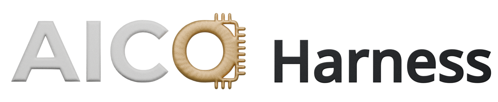
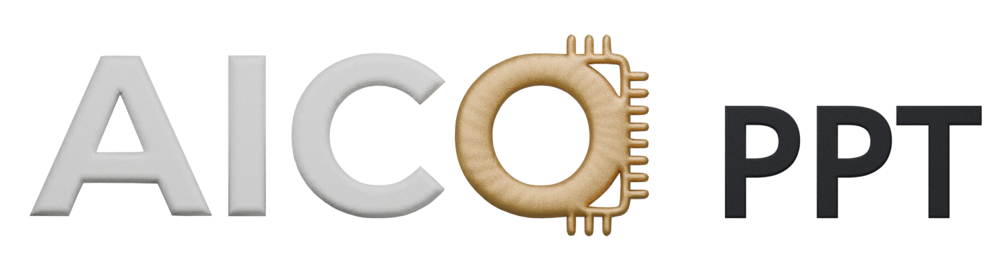
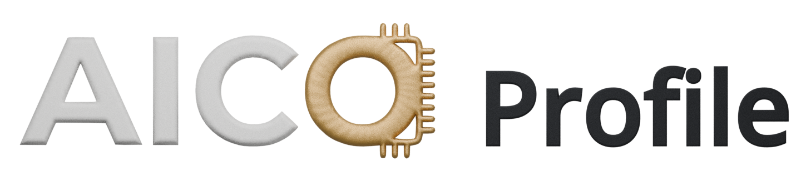
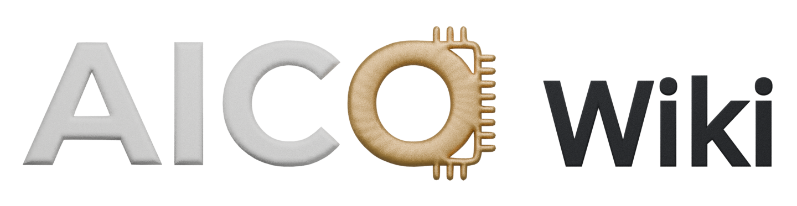

连接插件与会话，
不改变原装 DSH。
AICO Harness 是 AICO 系列插件与 DSH 开源框架之间的适配层。通过原版公开插件接口，让业务插件与会话顺畅协作，无需修改 DSH 源码，原装插件继续共存。
- 常驻工作台
- 通过原版插件接口连接业务视图与会话，保留原装插件。
- 模型连接可选
- 使用本机连接，或通过 WSL 连接模型；Agent、工具和文件仍在 Windows。
- 插件与资源管理
- 集中查看 AICO 插件与资源状态。可用版本请查看安装页。
功能按开发版说明展示 · 正式插件包待发布核验
原装之上，按需扩展架构示意
原装 DSH Desktop + 配套 DSH
会话与工作区原装插件继续共存
↕ 原版公开插件接口
AICO Harness
适配层 · 连接业务视图与会话
↕ 会话上下文与工具交互
PPT演示创作Profile性能分析Wiki个人工作记忆
通过原装插件机制安装与卸载，保留原装插件与业务数据。
专业能力，各就其位。看看迁移调优工具
AICO Harness · 迁移调优
查询与执行，
连起迁移调优。
面向昇腾模型迁移与调优，将知识查询、基线检索、远程操作和内容发表接入会话，减少在工具之间反复切换。
交互画面为设计示意；下方视频展示开发版真实操作，正式插件包待发布核验。
实操视频准备中按场景补充真实操作短片
会话中的迁移调优设计示意
查询这次模型迁移相关的适配经验。
↓ 理解需求，选择工具
内网中路知识库查询
↓ 检索知识，返回依据
回到当前工作
经验与来源，一起带回会话。
结合检索内容梳理适配思路，再核对原始文档。
示例内容，不连接真实知识库或服务器，不执行发表操作。
让工具接住具体工作。接下来，看看创作

从一句话，
到一份好表达。
与 AI 一起组织内容，再亲手打磨细节。让演示成为你的作品，而不只是一次生成的结果。
- 从材料开始
- 围绕汇报、授课、技术分享、任职材料和项目评审组织演示。
- 边讨论，边编辑
- 支持区域标注、直接文字编辑、移动缩放，以及撤销与重做。
- 演示与交付
- 预览 HTML 演示，导出可编辑或高清图片模式的 PPTX；导出后仍需核对版式。
功能按开发版说明展示 · 正式插件包待发布核验
先确定主题和表达目标。
实操视频准备中PPT · 真实操作素材待提供
准备演示1 / 6
从表达，走向分析生成之后，仍然可以继续打磨。

每一个判断，
都有迹可循。
在时间线中定位问题，在对话中深入分析。把结论带回数据，逐一核对。
- 选区就是上下文
- 在 MindStudio Insight 中选择事件或区间，再发起分析。
- 沿证据定位
- 查询真实后端数据，定位事件、查看详情，核对计算与通信关系。
- 随时接管视图
- 联动定位可暂停；也可使用直接定位，避免干扰手动操作。
功能按开发版说明展示 · 正式插件包待发布核验
先看完整过程，再选择关注的片段。
实操视频准备中Profile · 真实操作素材待提供
查看完整时间线1× · 0–30 ms
0 ms10 ms20 ms30 ms
Compute
Communication
Data loader
Host
10–20 ms
事件关联等待选区
先查看全局，再把关注区间交给 AI。
示例数据 · 不代表性能基准或诊断结论
准备演示1 / 6
从现象，到可以检查的依据。把发现留下来

每一次对话，
都让 Agent 更懂你。
从授权会话中整理知识、经验与个人偏好，通过手动或定时整理，为后续任务提供参考。减少重复说明，让协作越来越顺手。
- 主题 Wiki
- 通过 Markdown、双链、来源和局部关系图，阅读与维护工作知识。
- 个人画像
- 从授权用户会话中整理性能要求、格式偏好与工作习惯。
- 记忆由你控制
- 可纠正内容、不再记忆或暂停整理；无需预先创建知识库。
独立插件 · 下载状态见安装页
资料和讨论，是知识的起点。
个人工作记忆交互示意 · 示例内容
知识图谱已有知识 · 等待更新
关联知识 · 保留来源
先核对事件，再判断瓶颈
结合计算、通信与时间线证据，核对观察范围。
来源：项目讨论 · 可查看原文与修订个人画像 · 用户原句为依据
协作画像来自授权会话
表达偏好先结论，后证据汇报偏好
呈现方式用表格比较汇报偏好
协作特征重视核对依据项目讨论
性能取舍先验证再优化补充会话示例
工作习惯分步检查结果补充会话示例
当前任务聚焦迁移分析仅限本次任务
示例画像 · 可查看依据、纠正或不再记忆，不推断永久性格。
整理记录 · 本次示例
整理完成，结果可追溯。
- 确认授权范围与模型
- 读取来源，比较已有记忆
- 更新知识与个人画像
- 保留来源与本次整理记录
知识页可查看修订、纠正或不再记忆；设置可管理来源、每日计划与 Agent 使用。
查看记录不会重复发起整理。
立即整理 · 确认范围
只整理本次变化。
同步完成 · 2 个授权会话
使用已配置模型与本次预算
开始安装试用 不是另一个孤立的答案。